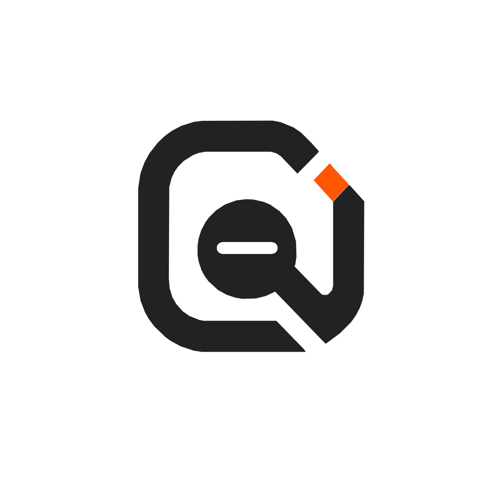

One setup command connects Lark, Slack, or GitHub to a local coding agent.
Pick the platform, the coding agent, and the local project OpenTag may work on.
The CLI starts the dispatcher, runner, and selected platform listener in one process.
The setup wizard links to the exact platform guide when credentials are needed.